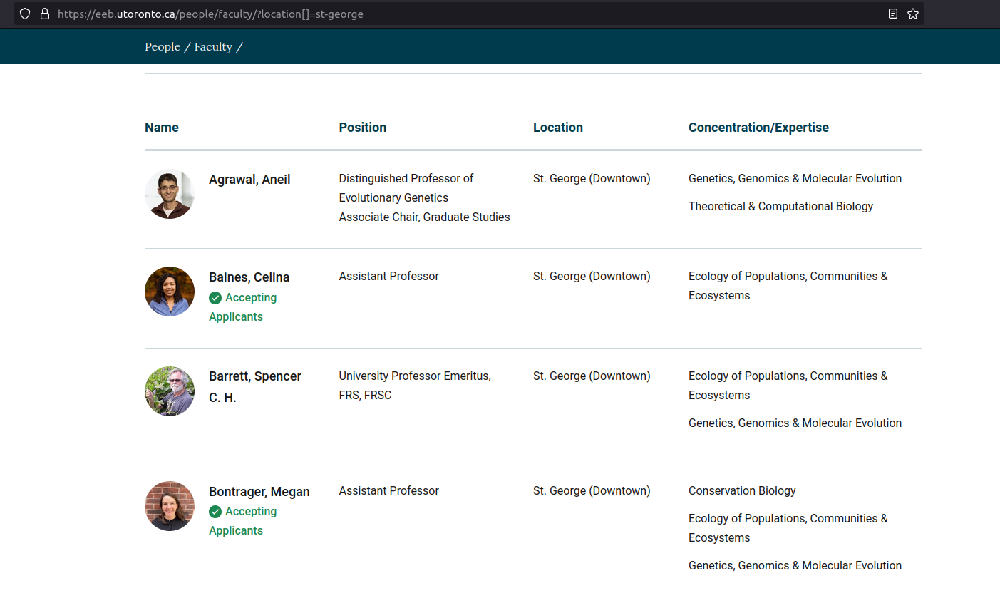

Indexing & Querying Objects
Once an object is created, we will want to be able to access its various components. Each data type can be indexed in multiple ways, so we'll go through indexing options by data type. Note that R is a programming language that starts indexing at 1 (i.e. the first element is 1) unlike other common programming languages such as Python which begin indexing at 0.
A simple rule of thumb when indexing is that most objects can be indexed using the [ ], containing the appropriate number of dimensions for the object at hand.
Vectors
Vectors are indexed via the [] notation. In a one-dimensional vector, the simplest and most common way to index is to pass the index or element number we want to those square brackets.
x <- c(1, 3, 9, 10, 76, 89)
If we want to index the 9 in this vector, that's in the third position, or index 3.
x[3]
## [1] 9
Similarly with a character vector
y <- c("The", "quick", "brown", "fox", "jumped", "over", "the", "lazy", "dog")
If we want to access the element "fox", the fourth element, we will write:
y[4]
## [1] "fox"
While indexing vectors, we can also return all the elements of a vector NOT in a certain position via the `-` sign:
y[-1]
## [1] "quick" "brown" "fox" "jumped" "over" "the" "lazy" "dog"
This returns all the elements of the vector *except* the first one.
We can also index based on multiple positions:
y[c(1, 4, 9)]
## [1] "The" "fox" "dog"
This returns the first, fourth, and ninth elements.
Lists
Since lists are also vectors, they're also indexed with notation, but recall that each element of a list can hold other objects of multiple dimensions. We can use one set of square brackets to index the list item, and then another to index elements within that list item. To access the element of the list, we actually use double square brackets, [[]].
l <- list(1, 2, "R is fun", c(1, 2, 3), TRUE) l[[4]]
## [1] 1 2 3
Here we see `l[[4]]` produces the fourth element, an atomic vector of length 3. What if we want to access the third element of that atomic vector to, say, reassign it to the value 5. We can do so like this:
l[[4]][3]
## [1] 3
We could now reassign this value to 5.
l[[4]][3] <- 5 l
## [[1]] ## [1] 1 ## ## [[2]] ## [1] 2 ## ## [[3]] ## [1] "R is fun" ## ## [[4]] ## [1] 1 2 5 ## ## [[5]] ## [1] TRUE
If we recall, we can also have named lists, which can be indexed by their names.
agrawal <- list("name" = "Dr. Aneil Agrawal", "positions" = c("Distinguished Professor of Evolutionary Genetics", "Associate Chair, Graduate Studies"), "concentrations" = c("Genetics, Genomics & Molecular Evolution", "Theoretical & Computational Biology")) names(agrawal)
## [1] "name" "positions" "concentrations"
By calling `names()` we can see the names of the different list components. We can index by any of these.
agrawal["concentrations"]
## $concentrations ## [1] "Genetics, Genomics & Molecular Evolution" "Theoretical & Computational Biology"
Here, we have the choice to use the square bracket notation as before, or we can use a new kind, the `$` notation.
agrawal$concentrations
## [1] "Genetics, Genomics & Molecular Evolution" "Theoretical & Computational Biology"
This provides the same output. Now let's say we wanted to access the second element in this "concentrations" element. Perhaps we want to rearrange the wording to say "Computational & Theoretical Biology" instead. We could do that with either the `[[]][]` notation we used before, or perhaps the easier to read option of combining both the `$` and `[]`:
agrawal$concentrations[2]
## [1] "Theoretical & Computational Biology"
Now let's reassign it:
agrawal$concentrations[2] <- "Computational & Theoretical Biology"
To check if it worked print the `agrawal` list to our console:
agrawal
## $name ## [1] "Dr. Aneil Agrawal" ## ## $positions ## [1] "Distinguished Professor of Evolutionary Genetics" ## [2] "Associate Chair, Graduate Studies" ## ## $concentrations ## [1] "Genetics, Genomics & Molecular Evolution" "Computational & Theoretical Biology"
And we see it worked.
Matrices
Indexing matrices is simple as it is a 2-dimensional extension of indexing atomic vectors.
m <- matrix(c(100, 200, 300, 400), nrow = 2, ncol = 2) m
## [,1] [,2] ## [1,] 100 300 ## [2,] 200 400
To access the value 300, we will need to specify that we want the value in the first row, and second column. Indexing in R is always done row then column.
m[1,2]
## [1] 300
We can get the entirety of the first row
m[1, ]
## [1] 100 300
or the first column
m[ ,1]
## [1] 100 200
by writing leaving the row/column argument empty, which tells R that for either condition, to include all values of that dimension.
DataFrames
Dataframes are lists (a special kind wherein all the elements are of the same length), so their indexing is actually very similar. Let's create an extension of the example we had above using some professors from the EEB department at the University of Toronto. We'll make a dataframe combining the information for a number of categories.
This is just for fun, so let's use the EEB website to get information on each of the professors' names, the school they got their PhD at, and whether or not they're accepting applicants for graduate work.
However, note that differently from above, we cannot have the "positions" nor the "concentrations" categories be of different lengths as that would violate the rules of a dataframe, so instead each category will be it's own vector:
# first make a list for each professor names <- c("Dr. Aneil Agrawal", "Dr. Celina Baines", "Dr. Spencer C.H. Barrett", "Dr. Megan Bontrager") phd <- c("Indiana", "Toronto", "Reading", "UBC") accepting <- c(FALSE, TRUE, FALSE, TRUE) # now make a dataframe out of these lists prof_df = data.frame(names, phd, accepting) prof_df
## names phd accepting ## 1 Dr. Aneil Agrawal Indiana FALSE ## 2 Dr. Celina Baines Toronto TRUE ## 3 Dr. Spencer C.H. Barrett Reading FALSE ## 4 Dr. Megan Bontrager UBC TRUE
If want to access any of the columns of this dataframe, we can do so by their names, the commonality with lists:
prof_df$phd
## [1] "Indiana" "Toronto" "Reading" "UBC"
We could also look at a single row:
prof_df[3, ]
## names phd accepting ## 3 Dr. Spencer C.H. Barrett Reading FALSE
which tells us all about Dr. Barrett. We could also ask whether or not the fourth row professor, Dr. Bontrager, is accepting students:
prof_df$accepting[4]
## [1] TRUE
Arrays
Since these are three dimensional objects, we must include all indices to get to a specific element. Let's used the named array we had in the data structures section as our example here:
# pre-define the vectors vec1 <- c(1, 2, 3) vec2 <- c(4, 5, 6) vec3 <- c(7, 8, 9) # define the rownames row_names <- c("row1", "row2", "row3") col_names <- c("col1", "col2", "col3") mat_names <- c("mat1", "mat2") # now remake the array with the names ar_named = array(c(vec1, vec2, vec3), dim = c(3, 3, 2), dimnames = list(row_names, col_names, mat_names)) ar_named
## , , mat1 ## ## col1 col2 col3 ## row1 1 4 7 ## row2 2 5 8 ## row3 3 6 9 ## ## , , mat2 ## ## col1 col2 col3 ## row1 1 4 7 ## row2 2 5 8 ## row3 3 6 9
To access each of these elements, we need to recall that the indexing will go `[row, column, matrix]`. So to see just the second row but all the columns and rows we might write:
ar_named[,,2]
## col1 col2 col3 ## row1 1 4 7 ## row2 2 5 8 ## row3 3 6 9
but to see each of the second columns in both matrices and all rows, we can write:
ar_named[, 2, ]
## mat1 mat2 ## row1 4 4 ## row2 5 5 ## row3 6 6
Further, if we want only the first row and the third column elements for all matrices, we can write:
ar_named[1, 3, ]
## mat1 mat2 ## 7 7
but the value for the third row, first column, only in matrix 2 would be found by:
ar_named[3, 1, 2]
## [1] 3
A common use case is that we may want, rather than to index a position, tell our object to return to us some part of that object containing a particular value. This is called data filtering and is discussed here.
The EEB R Manual is the work of researchers at the University of the Toronto
and intended as a purely educational resource. It holds no official
association with the R Foundation. It should not be taken as an
authority on R best practices.
When using this resource,
This content is reviewed regularly for errors and to make improvements, if you see an error and want to help us make this better, see the Contact Page